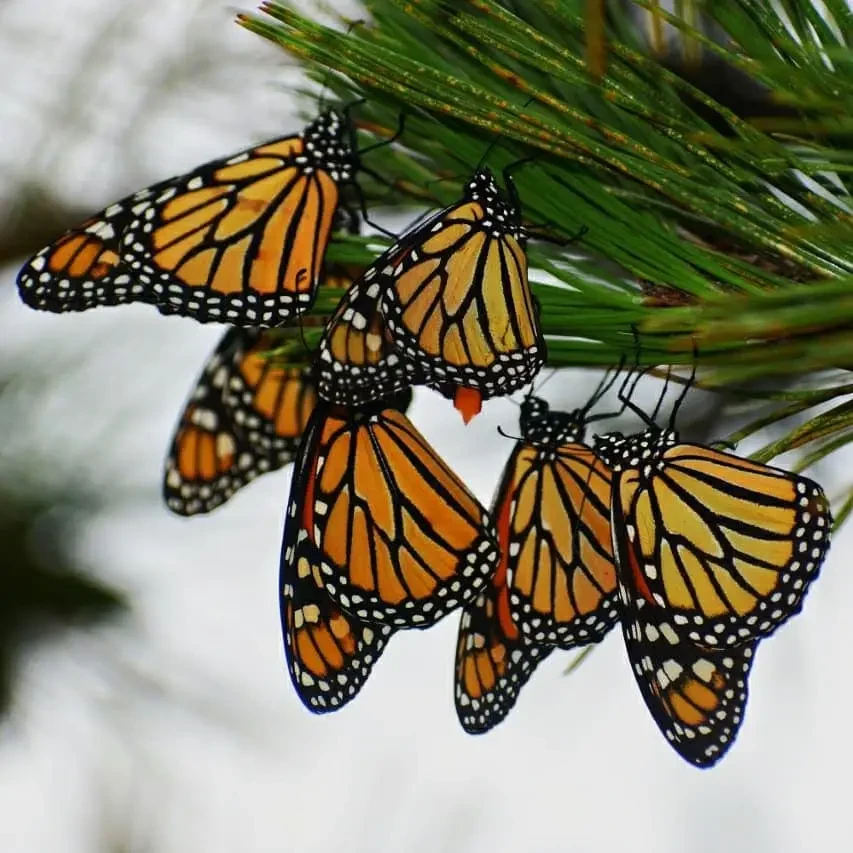
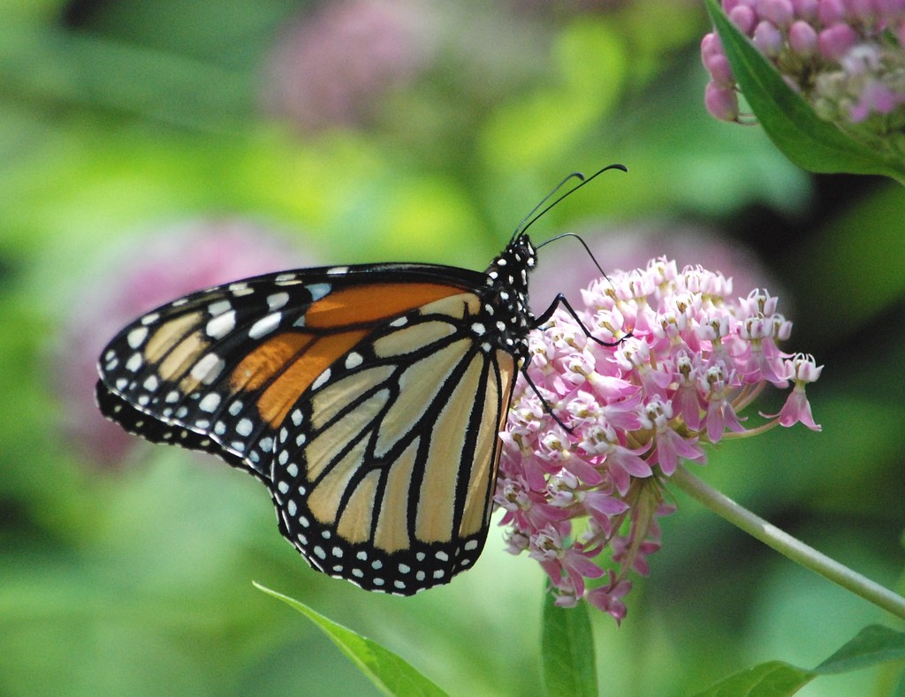

The magnificent monarch butterfly, recognized for its vibrant orange and striking black wings, is currently under the looming threat of extinction. Their numbers have sharply decreased due to the loss of their natural habitats, widespread pesticide use, and the impact of climate change.
The rapid growth of urban areas and the widespread expansion of agricultural activities have resulted in the significant loss and degradation of essential breeding and feeding grounds for monarch butterflies. This has had a detrimental impact on the ability of monarchs to successfully reproduce and find the necessary resources for their survival.
The use of harmful pesticides in modern farming practices has led to a significant decline in the availability of milkweed, which is the primary and essential plant on which monarch butterflies lay their eggs. This decline in milkweed has had a detrimental impact on the monarch butterfly population, as it disrupts their life cycle and natural habitat.
The changing weather patterns, including shifts in temperature, precipitation, and wind patterns, can disrupt the traditional migration routes of insects and alter their breeding seasons. These changes further endanger these beautiful creatures, as they struggle to adapt to the new environmental conditions.
Various organizations are working to restore habitats, promote milkweed planting, and raise awareness about the importance of protecting monarch butterflies.